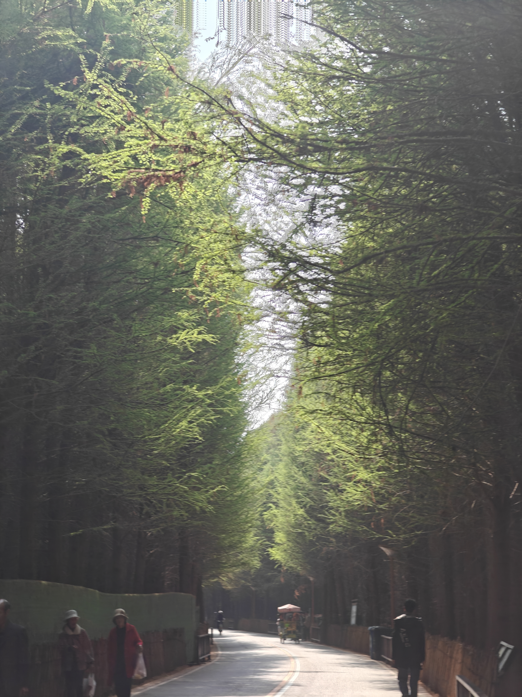
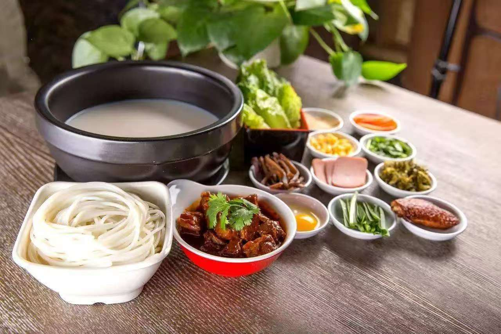

昆明坐落于云贵高原中部，是云南省的省会城市，举世闻名的“春城”。这里海拔适中，受季风气候影响，全年气温温差很小，冬天不寒冷，夏天不酷热，一年四季草木常青，鲜花常开不败。走在城市街头，随处都能见到盛放的鲜花，鲜花已经成为这座城市独有的城市印记。
昆明不仅拥有秀丽的自然风光，也沉淀了深厚的历史人文。这里是古代滇文化的发源地，也是近代西南联大的所在地。城市既有繁华热闹的现代商圈，也保留着充满烟火气息的老街巷。每到冬季，成千上万只红嘴鸥跨越千里来到昆明过冬，人和鸟类和谐共处，成为昆明一道温暖的风景线。

捞鱼河公园一年四季风景各不相同，冬日鸥鸟纷飞，夏日绿树成荫。

昆明美食种类十分丰富，口味鲜香浓郁，融合了滇菜的特色。过桥米线无疑是云南最具代表性的美食，滚烫的高汤，搭配各类鲜切肉片、配菜，依次下入汤中烫熟，米线爽滑，汤汁鲜美。除此之外还有汽锅鸡、豆花米线、烧饵块、野生菌火锅等众多特色吃食，每一样都充满了云南本地风味。

了解更多：
回顶部